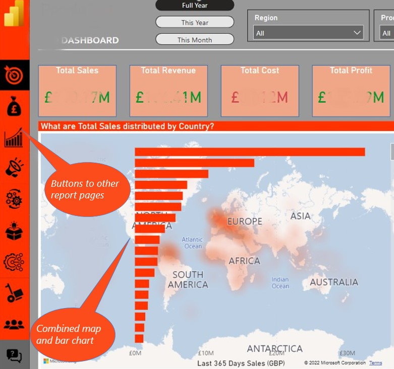
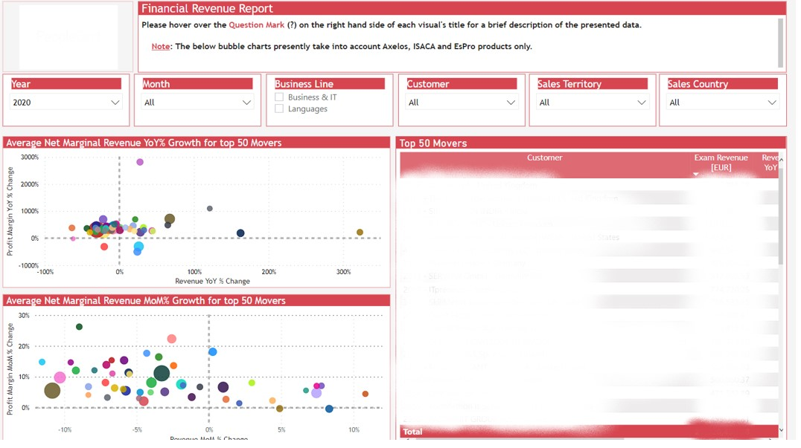
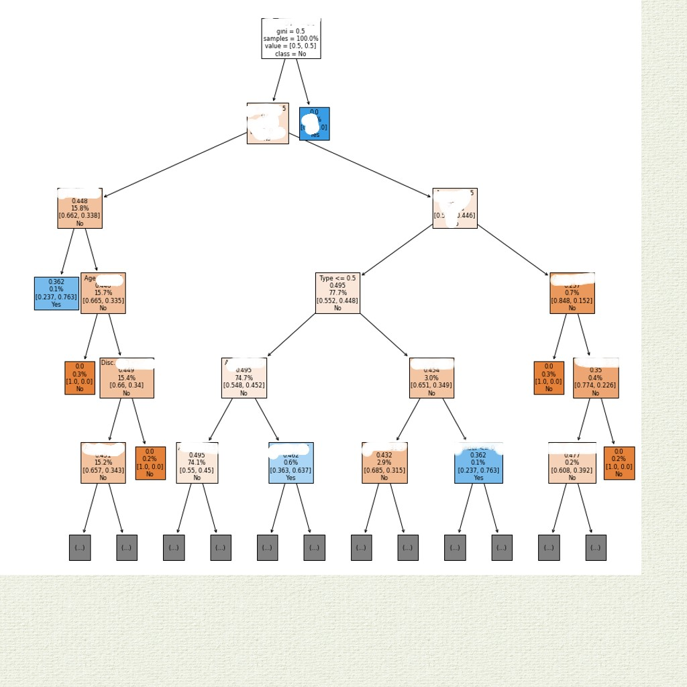
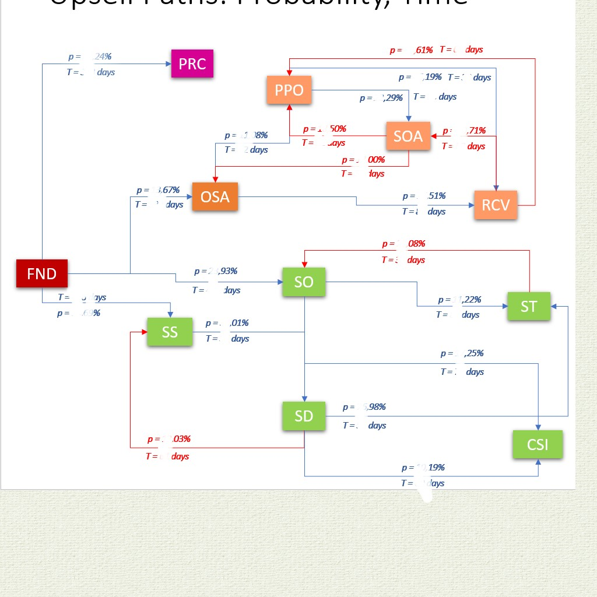
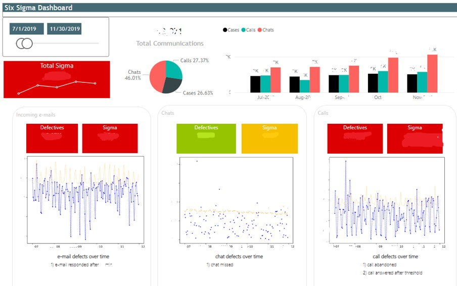
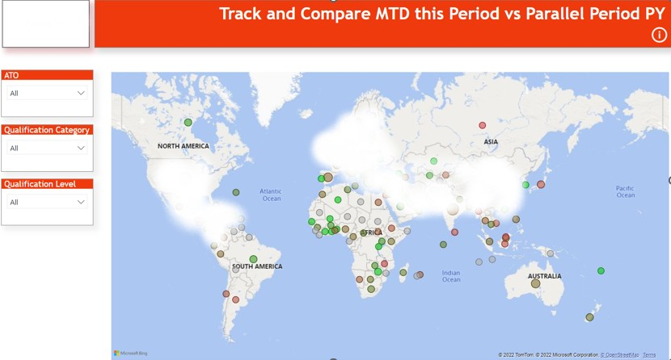

Projects for PeopleCert

Enterprise Data Warehouse
Upon joining the company, I embarked on the establishment of the company's Enterprise Data Warehouse (EDW) using the Kimball methodology and Microsoft Azure technology. The EDW functions as a central repository for all official reports, catering to both internal and external stakeholders. Its implementation includes self-service reporting capabilities through SSAS tabular functionality, empowering business analysts throughout the organization to independently generate reports using Excel and Power BI. This enhanced autonomy has significantly improved the quality of their outputs and boosted their productivity by a factor of 10.

The remarkable achievements stemming from this endeavor, along with the value derived from automated reports and advanced analytics produced by our team, led to the expansion of our team to encompass five individuals. Our team and the analytical capabilities of the organization continue to progress and evolve to this day.
Master Data Hub
The Master Data Hub (MDH) serves as a critical component of the Enterprise Data Warehouse (EDW) as well as a standalone system dedicated to master data management. The integrity and timeliness of the consolidated data within the EDW heavily rely on the efficacy of data flows and the meticulous curation performed on the MDH.
The development of the MDH not only yielded significant savings through enhanced data quality and streamlined consolidation processes, but it also fostered improved communication and collaboration among individuals across various departments, including external development teams. This collaborative environment allowed stakeholders to leverage the consolidated master data within their respective processes, resulting in greater operational efficiency and effectiveness. An exemplary illustration of this was the optimization of the automatic B2B invoicing middleware, an endeavor successfully undertaken by our team.
By establishing the MDH and refining the B2B invoicing middleware, we not only achieved substantial cost savings but also facilitated seamless coordination and utilization of master data throughout the organization. This integration and automation significantly improved operational workflows and fostered greater synergy across departments, ultimately contributing to the overall success of the enterprise.
AXELOS Data Mart
AXELOS, a prominent certification body, entrusted PeopleCert with the worldwide delivery of its exams. In the present day, PeopleCert has successfully acquired AXELOS. However, in 2017, AXELOS initiated a Request for Proposal (RFP) process to select a single examination institute from a pool of eight candidates to serve as its exam management partner.
During this RFP process, AXELOS outlined specific requirements, which included the development of a robust reporting capability to facilitate seamless information sharing with AXELOS. In response to these requirements, I took a pivotal role in designing the data mart and formulating a comprehensive proposition piece. Following our successful bid in winning the RFP, our team diligently executed the development of the necessary functionality.
To ensure a smooth flow of information, all pertinent data was sourced from the Enterprise Data Warehouse (EDW) and seamlessly delivered to a cloud-based database established by AXELOS. Subsequently, this database served as a foundation for a data warehouse independently developed by AXELOS in the subsequent years. It is worth noting that the current management of AXELOS-related processes, including the generation of reports based on the AXELOS data warehouse, now falls under the purview of PeopleCert. As part of this transition, I played a crucial role in migrating select reports to leverage the Business Intelligence (BI) capabilities supported by the EDW.
The evolution of these processes showcases the dynamic nature of the certification landscape and the adaptability of the systems and reporting mechanisms employed.
System Dynamics Reporting pack
This was a very insightful reporting pack, based on a System Dynamics approach. We created it together with Thomas Wittig, an external consultant. It provided a flow/stock perspective across PeopleCert processes, facilitating improved joint decision making across departments. We even created a 'making-of' video together with Thomas, discussing about the project vision and the approach we followed.

Customer Segmentation PoC
This proof-of-concept involved performing advanced analytics on exams data, and was delivered together with Thomas. Utilizing data science & process mining algorithms, we managed to understand better the customer journey and identify the promotional activities that engaged with exam candidates more effectively, as per their demographic and geographical characteristics.


Sales Reporting Pack
This was the one of the first reports I created at PeopleCert, supported by the first data mart of the EDW. Starting as a simple set of reports, listing sales from different customer, product and geographical perspectives, it evolved towards an informative reporting pack, that included information on the performance of various sales tactics and business development teams; it was used consistently by senior management, marketing & sales.
Automatic P&L and Balance Sheet Generation
We worked closely with the finance & accounting department to incorporate all the G/L entries in the EDW. This included complex calculation logic, to assign G/L entries to Balance Sheet and P&L reporting groups. As a result, the financial reporting team was able to create relevants reports on demand, while the P&L and Balance Sheet were generated automatically. This led to a 50x increase in productivity on the relevant tasks, ensuring quality at the same time.
Customer Service Reports
While those were standard reports, generating basic KPI's for monitoring performance and compliance to SLA's of the customer service department, it gave me to opportunity to propose a Six Sigma approach and create advanced Python visuals in Power BI, as a proof-of-concept.

Procurement Reports
We created a set of reports to help the relevant department manage various aspects of the procurement lifecycle. We followed a different approach on those reports, in the sense that no relevant data mart was created in the EDW. The reports were created solely on Power BI. Leveraging synergies with the rest of Power Platform, I enabled notifications to stakeholders embedding e-mail functionality within the reports; also utilized integrations with MS teams and designed processes for more effective collaboration.
PASSPORT Reports Website
The reports website is a component of the PASSPORT suite of exam delivery & management applications, developed in-house by PeopleCert. We worked together with the developers' team to populate some of the reports from the EDW, aligning metrics definitions with other reporting packs used internally and externally.
